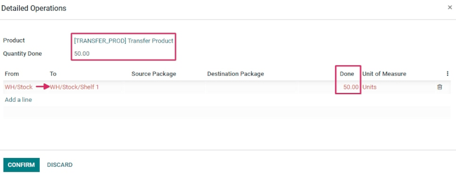
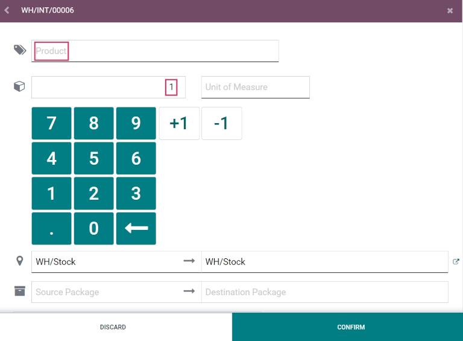

Create and process transfers with barcodes¶
The Barcode app can be used to process internal transfers for all types of products, including transfers for products tracked using lots or serial numbers. Transfers can be created from scratch in real time using an Odoo-compatible barcode scanner or the Odoo mobile app.
For a list of Odoo-compatible barcode mobile scanners, and other hardware for the Inventory app, refer to the Odoo Inventory • Hardware page.
Enable Barcode app¶
To use the Barcode app to process transfers, it must be installed by enabling the feature from the settings of the Inventory app.
To do so, go to the . Then, scroll down to the Barcode section, and click the checkbox next to the Barcode Scanner feature.
Once the checkbox is ticked, click Save at the top of the page to save changes.
When the page has refreshed, new options are displayed under the Barcode Scanner feature: Barcode Nomenclature (with a corresponding drop-down menu), where either Default Nomenclature or Default GS1 Nomenclature can be selected. The nomenclature selected changes how scanners interpret barcodes in Odoo.
There is also a Configure Product Barcodes internal link arrow, and a set of Print buttons for printing barcode commands and a barcode demo sheet.

For more on setting up and configuring the Barcode app, refer to the Set up your barcode scanner and Activate the Barcodes in Odoo documentation pages.
Scan barcodes for internal transfers¶
To create and process internal transfers for products in a warehouse, the Storage Locations and Multi-Step Routes features must be enabled.
To do so, go to the . Then, scroll down to the Warehouse section, and click the checkboxes next to Storage Locations and Multi-Step Routes.
Then, click Save at the top of the page to save changes.
Create an internal transfer¶
To process existing internal transfers, there first needs to be an internal transfer created, and an operation to process.
To create an internal transfer, navigate to the . From the Inventory Overview dashboard, locate the Internal Transfers card, and click on the 0 To Process button.
Then, click Create in the top left of the resulting page. This navigates to a new Internal Transfer form.
On this blank form, the Operation Type is automatically listed as Internal Transfers. Under that field, the Source Location and Destination Location are set as WH/Stock by default, but can be changed to whichever locations the products are being moved from, and moved to.

Once the desired locations have been selected, products can be added to the transfer. On the Product line under the Products tab, click Add a product, and select the desired product(s) to add to the transfer.
Once ready, click Save at the top of the form to save the new internal transfer. Once saved, click the Detailed Operations icon (four lines, at the far right of the Product line) to open the Detailed Operations pop-up window.
From the pop-up, click Add a line.
Then, in the To column, change the location from WH/Stock to a different location, where the products should be moved.
Next, in the Done column, change the quantity to the desired quantity to transfer. Once ready, click Confirm to close out the pop-up window.
Scan barcodes for internal transfer¶
To process and scan barcodes for internal transfers, navigate to the .
Once inside the Barcode app, a Barcode Scanning screen displaying different options is presented.
To process internal transfers, click on the Operations button at the bottom of the screen. This navigates to an overview page.

From this page, locate the Internal Transfers card, and click the # To Process button to view all outstanding internal transfers. Then, select the desired operation to process. This navigates to the barcode transfer screen.
Note
When using the Barcode app without the Inventory app (only if using a barcode scanner or the Odoo mobile app), the barcodes for each transfer of a corresponding operation type can be scanned to be processed easily.
Once scanned, the products that are part of an existing transfer can be scanned, and new products can be added to the transfer, as well. Once all products have been scanned, validate the transfer to proceed with the stock moves.
From this screen, an overview of all products to process within that specific internal transfer (WH/INT/000XX) is shown. At the bottom of the screen, there are options to Add Product or Validate, depending on if products need to be added to the operation, or if the whole operation should be validated at once.
Then, scan the barcode of the product to process the internal transfer.
Or, to process and scan each product individually, choose a specific product line. The + 1 button can be clicked to add additional quantity of that product to the transfer, or the pencil icon can be clicked to open a new screen to edit that product line.
In the product’s pop-up window, the product and the units to process is displayed with a number pad. Under the product name, the Quantity line can be edited. Change the number in the line to the quantity listed to be transferred on the internal transfer form.
Example
In the internal transfer operation WH/INT/000XX, 50 Units of the Transfer Product is
moved from WH/Stock to WH/Stock/Shelf 1. [TRANSFER_PROD] is the Internal
Reference set on the product form. Scan the barcode of the Transfer Product to receive one
unit. Afterwards, click the pencil icon to manually enter the transferred quantities.
Additionally, the +1 and -1 buttons can be clicked to add or subtract quantity of the product, and the number keys can be used to add quantity, as well.
Below the number keys are the two location lines, which read whichever locations were
previously specified on the internal transfer form, in this case WH/Stock and WH/Stock/Shelf 1.
Click these lines to reveal a drop-down menu of additional locations to choose from.
Once ready, click Confirm to confirm the changes made to the product line.
Then, from the overview page with all products to process within that transfer (WH/INT/000XX), click Validate. The receipt has now been processed, and the Barcode app can be closed out.
Tip
The Barcode app can also be used to scan products in internal transfers containing unique lot numbers and serial numbers.
From the barcode transfer screen, scan the barcode of a lot or serial number, and Odoo automatically increases the quantity of the product to the quantity recorded in the database. If the same lot or serial number is shared between different products, scan the product barcode first, then the barcode of the lot/serial number.
Create a transfer from scratch¶
In addition to processing and scanning barcodes for existing, previously-created internal transfers, the Barcode app can also be used to create transfers from scratch, simply by scanning a printed operation type barcode.
Did you know?
Odoo’s Barcode application provides demo data with barcodes to explore the features of the app. These can be used for testing purposes, and can be printed from the home screen of the app. To access this demo data, navigate to the and click stock barcodes sheet (bolded and highlighted in blue) in the information pop-up above the scanner.

To do this, first navigate to the . Once inside the Barcode app, a Barcode Scanning screen displaying different options is presented.
From this screen, when using a USB or bluetooth barcode scanner, directly scan the product barcode.
When using a smartphone as the barcode scanner, click the Tap to Scan button (next to the camera icon, at the center of the screen). This opens a Barcode Scanner pop-up screen that enables the camera of the device being used.
Face the camera toward the printed operation type barcode to scan it. Doing so processes the barcode, and navigates to a barcode transfer screen.
From this screen, an overview of all products to process within that specific internal transfer (WH/INT/000XX) is shown. Since this is a new transfer created from scratch, however, there should not be any products listed on the page.
To add products, scan the product barcode. If the barcode is not available, manually enter the product into the system by clicking the Add Product button at the bottom of the screen, and add the products and product quantities that should be transferred.
Once ready, click Confirm to confirm the changes made to the product line.
Then, from the overview page with all products to process within that transfer (WH/INT/000XX), click Validate. The internal transfer has now been processed, and the Barcode app can be closed out.